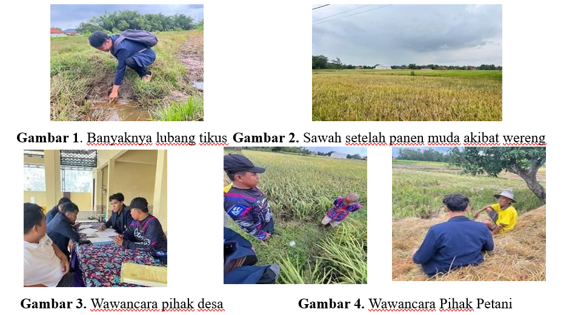

SMARTPEST-LANGKAP
Inovasi Pengendalian Hama Padi Berbasis Energi Surya
A. Judul
SMARTPEST-LANGKAP: Inovasi Pengendalian Hama Padi Berbasis Energi Surya untuk Mendukung SDGs 2 Zero Hunger di Desa Langkap.
B. Ringkasan Proposal
Desa Langkap merupakan wilayah agraris strategis di Kabupaten Bangkalan dengan luas lahan pertanian mencapai 268 hektar dan didukung oleh 684 petani aktif. Desa ini memiliki peran penting sebagai pemasok pangan bagi 10 Satuan Pelayanan Pemenuhan Gizi (SPPG). Namun, produksi pertanian sering mengalami kerugian akibat serangan hama burung, wereng, dan tikus.
Program SMARTPEST-LANGKAP menghadirkan solusi berupa sistem pengendalian hama otomatis berbasis energi surya yang memanfaatkan sensor ultrasonik, sensor thermal, sensor PIR, serta lampu UV untuk mengendalikan hama secara ramah lingkungan.
C. Pendahuluan

Desa Langkap memiliki produksi padi sekitar 100 ton setiap musim panen dan dapat melakukan panen hingga 3 kali dalam setahun sehingga total produksi mencapai sekitar 300 ton. Namun kerugian panen akibat hama dapat mencapai sekitar 20%.
Selama ini petani menggunakan metode konvensional seperti pestisida, racun tikus, dan pengusiran burung secara manual. Metode ini tidak efisien dan memerlukan biaya operasional yang tinggi.
SMARTPEST dirancang sebagai alat otomatis untuk mengusir burung, tikus, dan membasmi wereng menggunakan teknologi sensor pintar dan energi surya sehingga dapat bekerja secara mandiri tanpa biaya listrik.
D. Rumusan Permasalahan
- Inefisiensi pengendalian hama menggunakan metode konvensional.
- Tingginya biaya operasional pertanian.
- Kebutuhan sistem energi mandiri berbasis panel surya.
- Kesenjangan digital dalam pengelolaan data pertanian.
- Kebutuhan kaderisasi petani agar mampu mengoperasikan teknologi.
- Kebutuhan transfer pengetahuan teknologi kepada masyarakat.
E. Solusi Permasalahan

| No | Masalah | Solusi | Luaran |
|---|---|---|---|
| 1 | Serangan hama tinggi | Implementasi sistem SMARTPEST dengan sensor ultrasonik, thermal, dan UV | 4 unit alat SMARTPEST |
| 2 | Biaya operasional tinggi | Penggunaan energi surya untuk operasional alat | Efisiensi biaya |
| 3 | Data pertanian tidak terdokumentasi | Pembuatan website manajemen pertanian | Website aktif |
| 4 | Literasi teknologi rendah | Pelatihan penggunaan teknologi | Local Hero petani |
F. Tujuan Program
- Mengimplementasikan sistem SMARTPEST berbasis sensor dan energi surya.
- Mengurangi biaya operasional pertanian.
- Mengembangkan website manajemen pertanian desa.
- Membentuk tim Local Hero untuk pengelolaan teknologi.
- Melakukan transfer knowledge kepada masyarakat.
G. Indikator Keberhasilan
| Indikator | Sebelum | Sesudah |
|---|---|---|
| Pengendalian Hama | Manual | Sistem SMARTPEST |
| Kerugian Panen | ±20% | Turun 10-15% |
| Digitalisasi Data | Tidak ada | Website monitoring |
| Literasi Teknologi | Rendah | Petani mampu mengoperasikan alat |
H. Luaran Program
Luaran Wajib
- Laporan akhir program
- Akun media sosial SMARTPEST
- Buku refleksi pemberdayaan desa
- Video dokumenter
- Poster hasil program
Luaran Tambahan
- Implementasi 4 unit SMARTPEST
- Website manajemen pertanian
- Manual book penggunaan alat
- Pelatihan kelompok tani
- Publikasi jurnal ilmiah
I. Metode Pelaksanaan
Program dilaksanakan melalui beberapa tahap yaitu survei awal, perancangan alat, instalasi SMARTPEST, pelatihan petani, monitoring sistem, serta evaluasi program.
Program dirancang dalam roadmap tiga tahun untuk memastikan keberlanjutan teknologi dan kemandirian masyarakat dalam mengelola sistem SMARTPEST.
J. Jadwal Kegiatan
| Kegiatan | Bulan 1 | Bulan 2 | Bulan 3 | Bulan 4 | Bulan 5 |
|---|---|---|---|---|---|
| Survei & Perizinan | ✔ | ||||
| Instalasi SMARTPEST | ✔ | ||||
| Monitoring | ✔ | ||||
| Evaluasi | ✔ | ||||
| Laporan Akhir | ✔ |